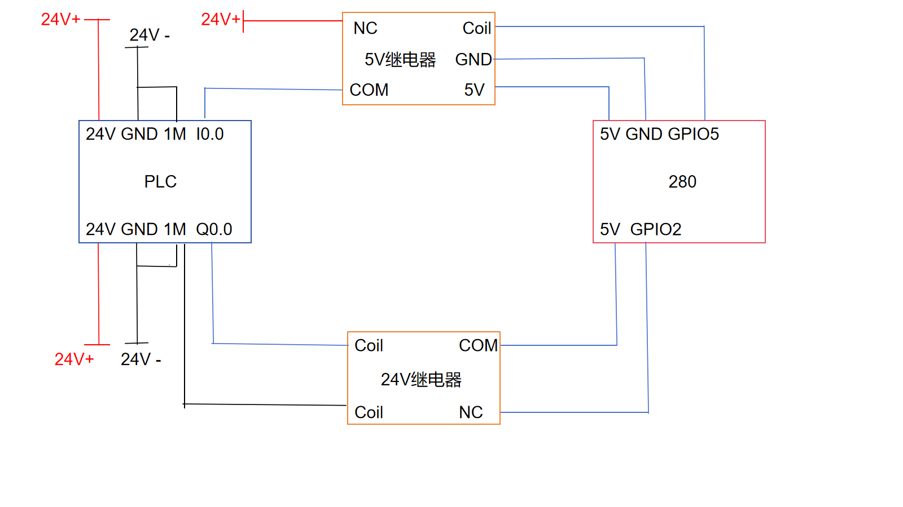
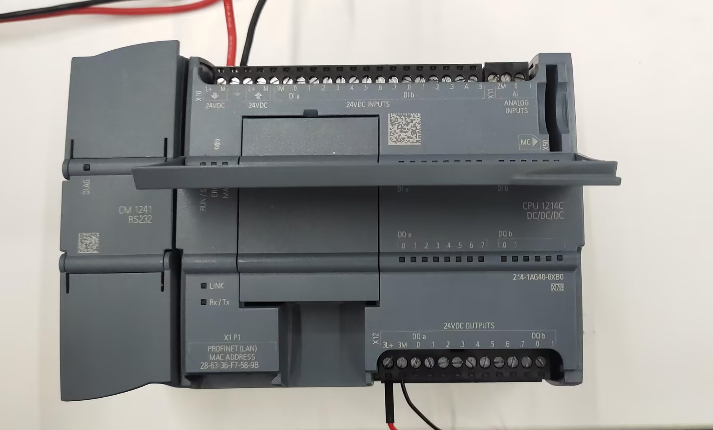
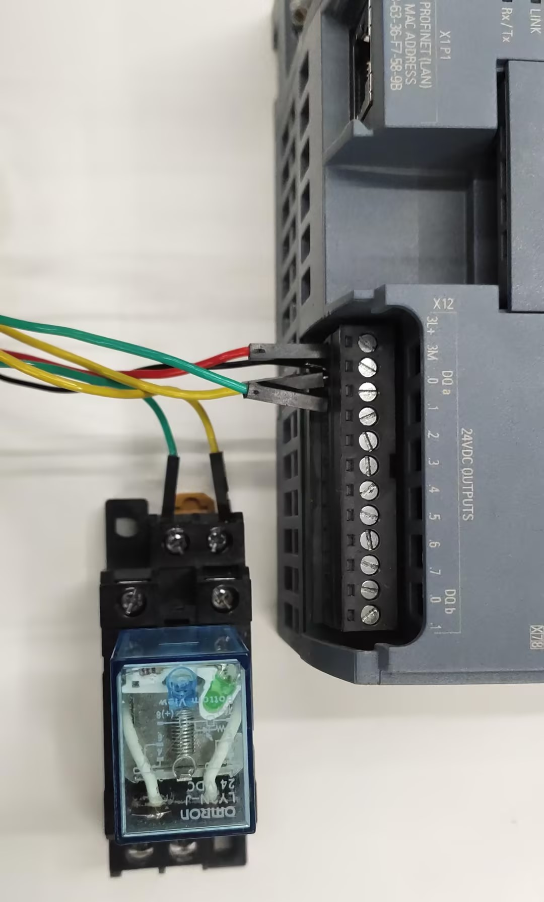
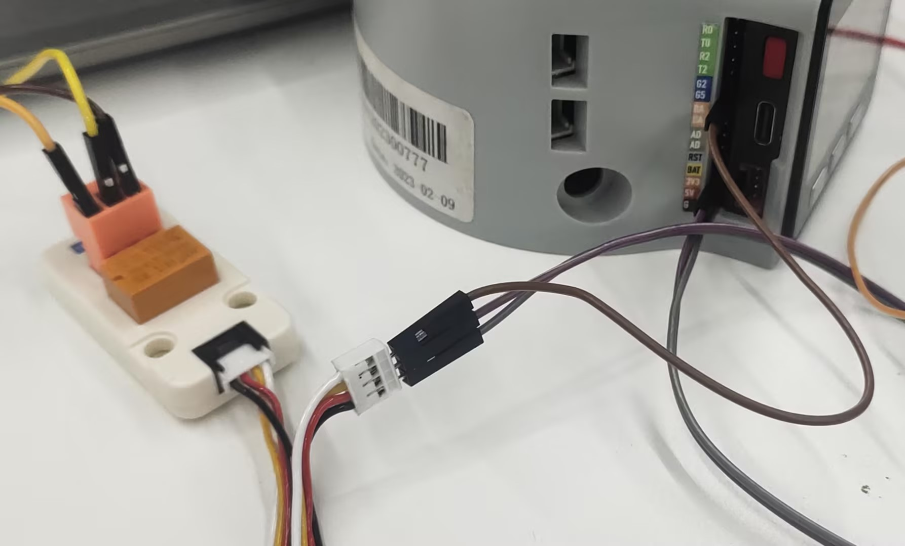
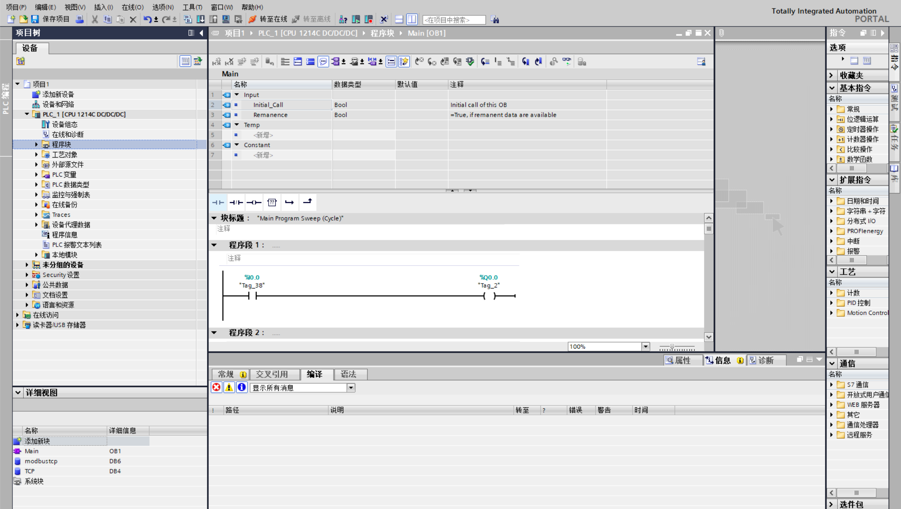

第七章 成功案例
myCobot 280 系列机械臂，支持十余种配件，包含底座、末端扩展、周边产品等，多配件叠加可以完成复杂项目应用，满足商业化展会展示，如机器人应用模型展示、教育教学套装展示、工业4.0的应用场景展示等需求。支持python、C++等多种主流编程语言，满足开发者的多样化需求。
用户案例展示视频
【应用案例】大象机器人myCobot小象机械臂 创意视频集锦
280 PLC IO交互控制案例
1.功能效果说明
机械臂收到PLC的IO信号后，会执行一个各个关节回到零位的动作
2.原理说明
由于机械臂的输入输出为3.3V，PLC的输入输出为24V，所以需要1个5V的继电器和24V的继电器，机械臂的输出端首先会先输出一个信号，使得5V继电器线圈得电，接通常开触点，将24v信号传递给PLC的输入端，PLC采集到有输入信号后，PLC输出端会输出一个信号，使得24v继电器线圈得电，接通常开触点，将3.3V信号传递给机械臂的输入端，机械臂采集到有输入信号后， 就会执行一个各个关节回到零位的动作
3.硬件链接
整体连接示意图 
机械臂的输入与PLC的输出接线 先给PLC接入24V电源

再将PLC的输出接到24V继电器线圈

将机械臂的GPIO2和3.3V接到24V继电器的常开触点上

机械臂的输出与PLC的输入接线 将机械臂的5v，GND和GPIO5接到5V继电器的线圈上

再将24V的正极接到5V继电器的COM端上，24V的负极接到PLC的1M端上,NO接到PLC的输入上

4 软件编程
机械臂程序
import time
mc=MyCobot("COM6")
mc.set_basic_output(5,1)
while 1:
if mc.get_basic_input(2)==1:
mc.sync_send_angles([0,0,0,0,0,0],50)
break
else:
pass
mc.set_basic_output(5,0)
PLC程序 
5.效果展示